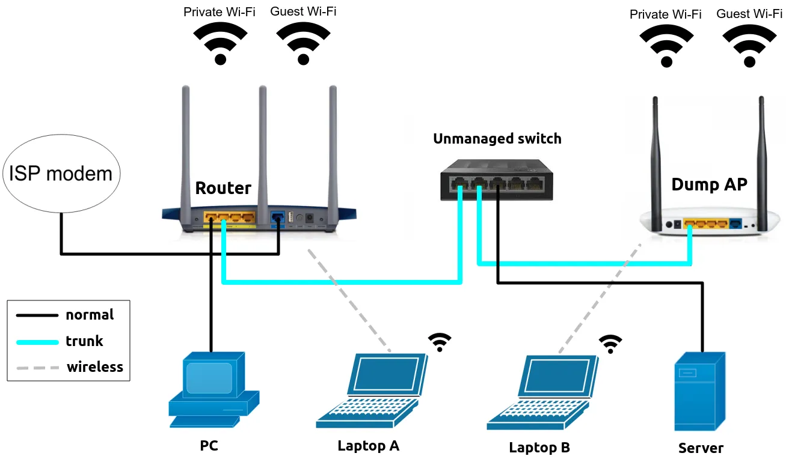
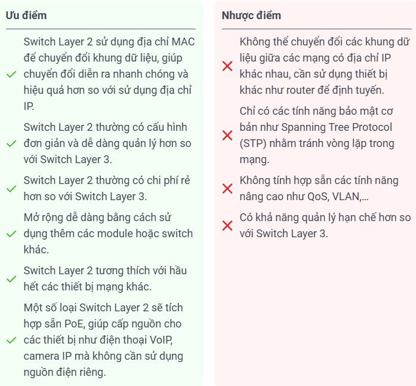
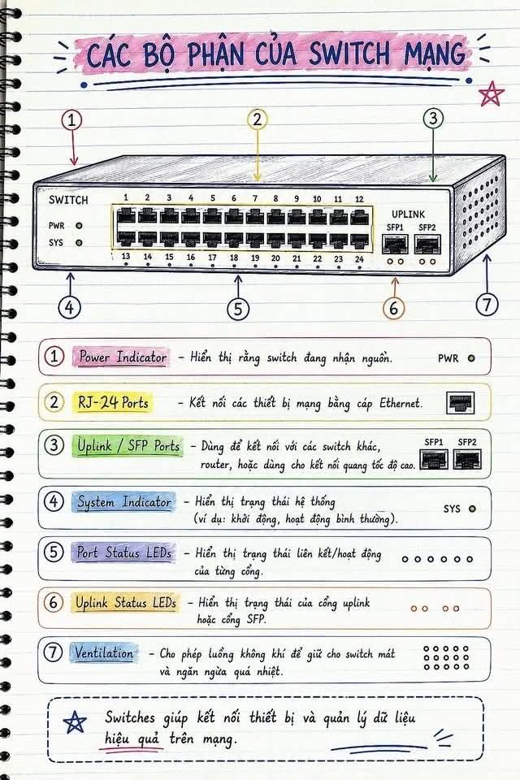

SWITCH layer 2 (Bộ chuyển mạch): Là thiết bị dùng để điều hướng hoạt động ở Tầng 2 (Data link) , chuyển các thông tin giao tiếp giữa các thiết bị với nhau, giúp cho các thông tin đến các thiết bị 1 cách chính xác , nó có thể đọc đc địa chỉ MAC nhờ đó có thể chuyển thông tin 1 cách chính xác hơn
➜ Switch chỉ thường dùng ở trong mạng LAN và thường chỉ truyền trong phạm vi mạng LAN , muốn truyền ra ngoài cũng có thể nhưng đó là switch nâng cao (switch layer 3) còn bình thường switch chỉ xài đc trong mạng LAN. Muốn ra ngoài thì xài Router
🔀 Đặc điểm của Switch:
- Switch Layer 2 sở hữu bộ tính năng cơ bản, đáp ứng hầu hết các nhu cầu kết nối và truyền tải dữ liệu trong mạng nội bộ (LAN). Loại switch này thực hiện nhiệm vụ chuyển mạch dựa trên lớp liên kết dữ liệu (Data Link Layer) của mô hình OSI, sử dụng địa chỉ MAC để chuyển tiếp khung dữ liệu (data frame) một cách chính xác.
- Thiết bị này yêu cầu địa chỉ MAC nguồn và đích của mỗi khung dữ liệu để chuyển mạch. Switch Layer 2 có khả năng tự động học các địa chỉ MAC bằng cách ghi lại địa chỉ MAC nguồn của mỗi khung nhận được, sau đó lưu trữ địa chỉ MAC đó trong một bảng chuyển tiếp (MAC address table).
🔀 Cách hoạt động của Switch:

Ví dụ có 4 PC trong mạng LAN là PC1 và PC2 và PC3 và PC4, PC1 muốn chuyển dữ liệu cho PC2 thì đi qua swich như sau
- PC1 sẽ gửi thông tin của nó bao gồm địa chỉ MAC của PC1 và cả địa chỉ MAC của PC2, gửi toàn bộ thông tin tới switch
- Switch nhận được thông tin của PC1 thì sẽ tiến hành tìm MAC của PC2 bằng cách Broacast nghĩa là gửi toàn bộ thông tin tới các PC trong thiết bị ( mỗi thiết bị đều có 1 địa chỉ MAC duy nhất)
- Sau khi biết MAC thì tiến hành gửi gói tin cho PC2
- Ngoài ra khi gửi xong MAC thì switch sẽ tự học địa chỉ MAC của PC mới gửi và lưu vào MAC table, lần tới sẽ khi gửi lại sẽ biết luôn địa chỉ mà không cần tìm
➜ Nói tóm lại quy trình đơn giản hóa sẽ là PC1 - Switch - Tìm MAC - gửi cho PC2.
🔀 Chức năng của Switch layer 2:
- Chuyển tiếp dữ liệu: Switch kiểm tra MAC đích và gửi frame đến đúng thiết bị.
- Học địa chỉ MAC: Switch tự lưu MAC Address vào MAC Table để chuyển dữ liệu nhanh hơn.
- Lọc dữ liệu: Kiểm soát frame dựa trên MAC, VLAN giúp tăng bảo mật.
- Chia mạng: Switch Layer 2 chia LAN thành các vùng nhỏ, giảm va chạm.
- Bảo mật: Hỗ trợ STP giúp tránh vòng lặp trong mạng.
- Hỗ trợ mạng: Hoạt động với Ethernet, Fast Ethernet, Gigabit Ethernet.
🔀 Ưu và nhược điểm của switch layer 2:

🔀Cấu tạo của swith:

🔀 Các loại Switch hiện nay:
- Switch Layer 2 Unmanaged: Không có khả năng quản lý, các cổng và thông số mạng không thể điều chỉnh. Phù hợp hộ gia đình, văn phòng nhỏ vì giá rẻ.
- Switch Layer 2 Managed: Có khả năng quản lý, cho phép theo dõi và cấu hình cổng mạng. Dùng trong doanh nghiệp cần quản lý phức tạp.
- Switch Layer 2 PoE: Cấp nguồn qua cáp Ethernet cho camera, điện thoại IP, WiFi AP, giúp giảm dây nguồn riêng.
- Switch Layer 2 Gigabit: Hỗ trợ tốc độ lên đến 1000 Mbps, phù hợp mạng cần truyền dữ liệu lớn và nhanh.
- Switch Layer 2 Stackable: Cho phép ghép nhiều switch lại với nhau để tăng cổng, tăng băng thông và dễ quản lý, nhưng giá cao hơn.
? Vậy tại sao lại có switch layer 2 và switch layer 3, khác gì nhau không
Câu trả lời là khác nhau switch của layer 2 thì hoạt động ở tầng 2 của OSI chỉ có thể chuyển dữ liệu thông qua địa chỉ MAC chứ không thể dùng IP. Nếu không có MAC thì không chuyển được mà phải dùng router. Ngược lại switch layer 3 thì chạy trên tầng 3 mô hình OSI ở đó có thể đọc IP để chuyển dữ liệu chứ không phụ thuộc vào MAC
➜ Tóm lại tùy vào nhu cầu sử dụng nếu chỉ sử dụng để truyền dữ liệu trong mạng LAN nơi các thiết bị nhỏ lẻ thì xài switch layer 2, còn nếu muốn dùng switch vận chuyển khỏi phạm vi mạng LAN thì dùng switch layer 3 nhưng thường dùng router nhiều hơn.